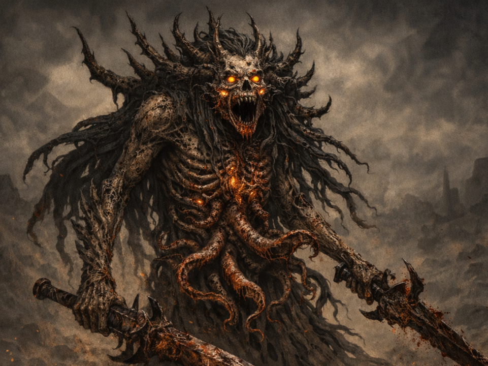
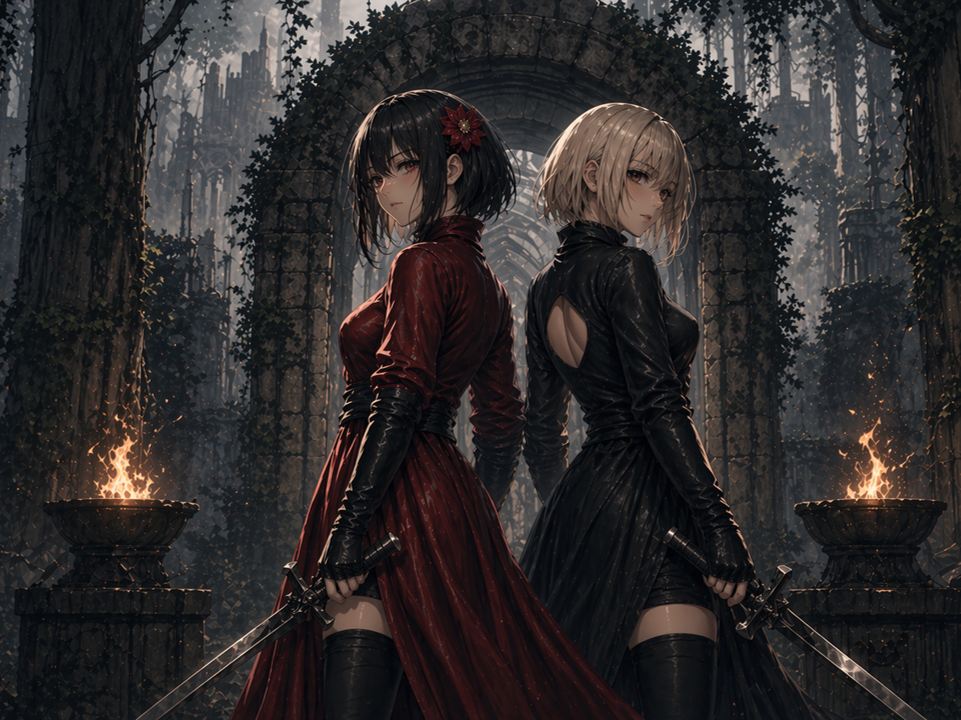
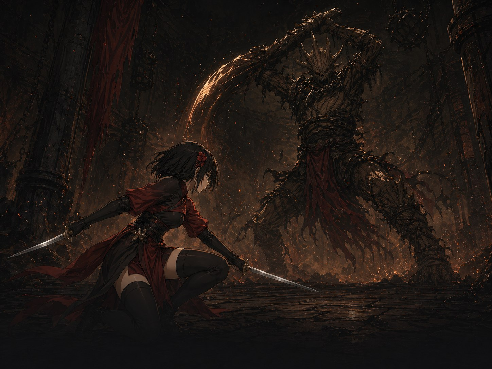
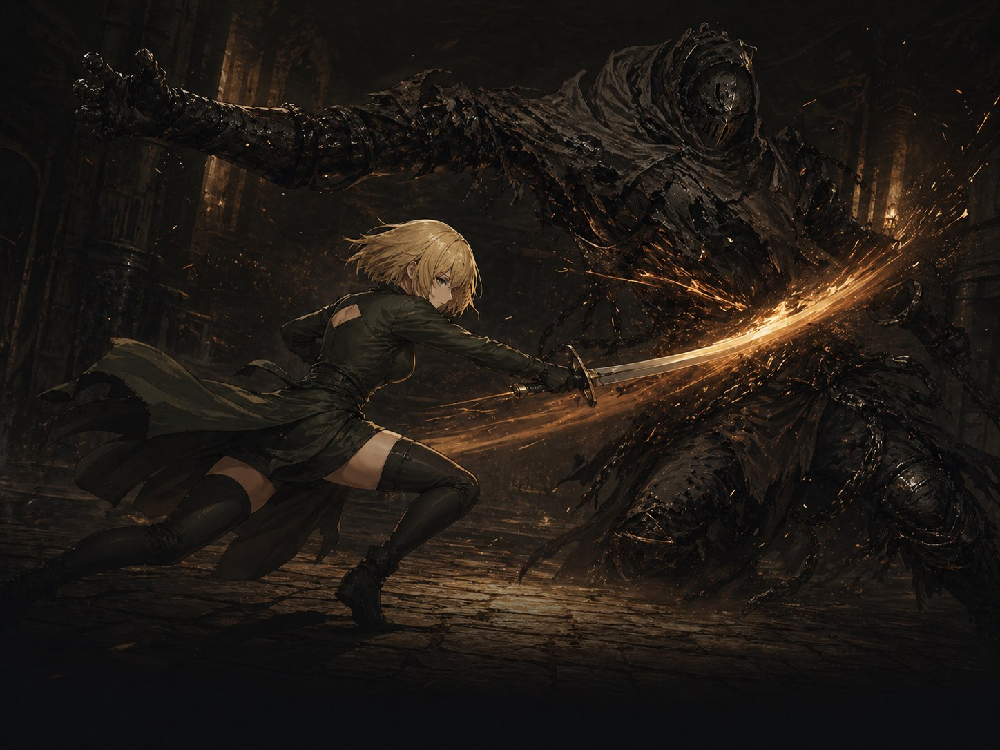
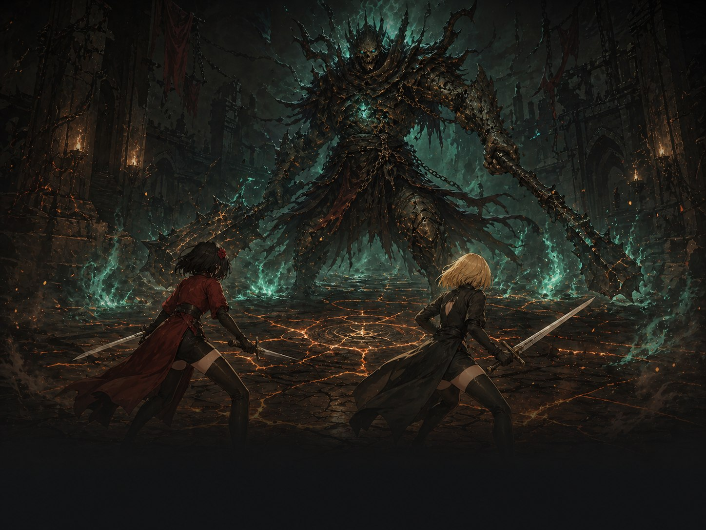
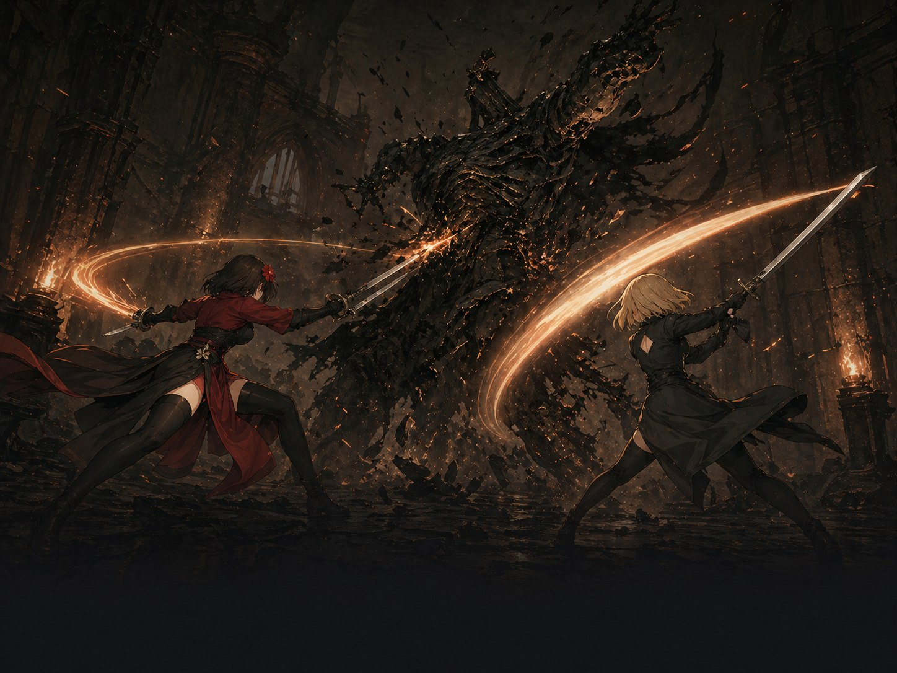

01
Grid-based combat
The Google Play version uses a mobile-friendly 3x2 vertical grid. The Steam PC version expands the combat into a 5x2 grid with remastered 16:9 boss arenas.
Dark fantasy 2D Soulslike
Every dodge creates the next opening. Every defeat makes the boss pattern clearer. Survive a ruined world by reading the fight, choosing your timing, and striking back with intent.
Play the DEMO on Steam and add Boss Rush to your wishlist.
The game
Broken Soul compresses Soulslike tension into grid-based 2D action. Dodge, parry, time your movement, read the pattern to find safe positions, and counter the brief moment when the boss rhythm opens.
The Google Play version uses a mobile-friendly 3x2 vertical grid. The Steam PC version expands the combat into a 5x2 grid with remastered 16:9 boss arenas.

Victory comes from reading the pattern and committing at the right moment, not from frantic inputs.

More than twenty boss-type monsters turn each stage into a test of memory, nerves, and precision.

Nyra and Jiny change how you approach distance, pressure, and risk in every rematch.
Platform versions
Broken Soul is one world played in two forms. The Google Play version focuses on short, dense mobile battles, while the Steam PC version remasters the experience for wider arenas and deeper boss mastery.
Fragments of Hope
A casual Soulslike action version shaped for mobile. Read compact boss patterns inside a 3x2 vertical grid and recover fragments of hope one attempt at a time.
Boss Rush
A deeper Soulslike action version remastered for PC. Fight in 16:9 arenas with a 5x2 grid, larger boss patterns, sharper timing, and harder-earned victories.
Combat design
Each fight is built around clear tells, spacing, stamina pressure, and phase changes. Stay calm, read the next move, and take the opening when it appears.

Bosses reveal their next move through posture, rhythm, and distance.

The safest attack window comes after you survive the pattern, not before.

Every phase changes the angle, speed, and recovery timing of the fight.

Every input matters, so each victory feels earned.
Official videos
Watch the game trailer, gameplay trailer, and the Nyra and Jiny character previews.
A look at Broken Soul's dark fantasy mood, boss pressure, and ruined world.
See the grid movement, timing, boss patterns, and the cost of each mistake.
Playable heroes
Switch between two fighters with different combat instincts. Nyra rewards patient reads, while Jiny turns pressure into decisive attacks.
A disciplined duelist who turns careful pattern reading into precise counters.
A relentless challenger who thrives on close pressure and decisive punishment.
Screenshots
Browse the in-game captures and see how each arena frames a different pattern challenge.
Media and community
Find store pages, coverage, and community channels for updates from Double J Labs.
Available now
Play the demo on Steam and add Boss Rush to your wishlist.